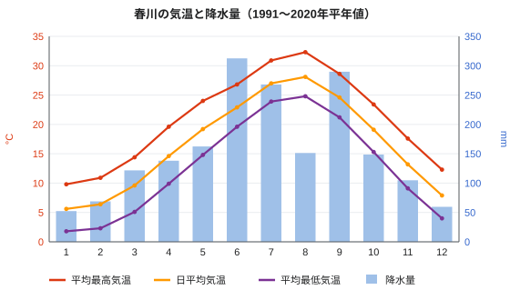

春川市の気候
| 春川市の気候 はるかわしのきこう | |
|---|---|
 みのり県内の春川市の位置 | |
| 概要 | |
| ケッペンの気候区分 | Cfa（温暖湿潤気候） |
| 観測地点 | 春川地方気象台（城町、標高6 m） |
| 平年値 | 1991年–2020年 |
| 年間の平年値 | |
| 平均気温 | 16.5 °C |
| 平均最高・最低気温 | 20.9 °C・12.7 °C |
| 降水量 | 1,878.2 mm |
| 降水日数（1 mm以上） | 110.7日 |
| 日照時間 | 2,082.9時間 |
| 極値 | |
| 最高気温 | 38.4 °C（2018年8月7日） |
| 最低気温 | −6.2 °C（1981年1月28日） |
| 日降水量 | 287.0 mm（2004年9月19日） |
春川市の気候（はるかわしのきこう）では、みのり県の県庁所在地である春川市の気候について述べる。春川市は温暖湿潤気候（ケッペンの気候区分 Cfa）に属し、夏は高温多湿、冬は温暖で、雨は初夏の梅雨と秋の台風の時期に集中する。春川地方気象台の1991年–2020年の平年値では、年平均気温は16.5 °C、年降水量は1,878.2 mmである[1]。気象台は春川城に近い城町の標高6 mの地点にあり、1891年から観測を続けている。
概要[編集]
春川市はみのり湾の奥、鏡川のデルタに位置する。湾が気温の変化を和らげるため、冬の夜の冷え込みは弱く、夏の日中は蒸し暑い。一方、月見山をはじめとする北の山地が冬の冷たい北西風を遮っている。年間の平均最高気温は20.9 °C、平均最低気温は12.7 °Cである。降水日数は年110.7日、日照時間は年2,082.9時間で、日本の中では日照に恵まれている[1]。
季節[編集]
春[編集]
春は穏やかで比較的雨が少ない。平均気温は3月の9.6 °Cから5月には19.2 °Cまで上がる。春川城址公園の桜は例年3月26日頃に開花し、みのり湾のタイが最もおいしくなる「桜鯛」の季節は3月から5月である。
梅雨と夏[編集]
梅雨の時期は例年6月6日頃から7月19日頃までである。6月は1年で最も雨が多い月で、降水量は312.5 mmに達し、日照時間は最も短い（148.9時間）。梅雨が明けると高温多湿の夏となり、8月は平均気温28.1 °C、平均最高気温32.3 °Cで最も暑く、日照時間も216.0時間と最も長い。湿度は7月に79%で最も高くなる。最高気温が30 °C以上の真夏日は年に約68日、35 °C以上の猛暑日は約5日である[1]。
台風期と秋[編集]
9月は台風や秋雨前線による大雨が多く、降水量は289.7 mmで2番目に多い。台風は年平均2.6個が接近し、その多くは8月と9月である[注 1]。日降水量の最大記録である287.0 mmは2004年9月19日に観測され、このとき鏡川は汐見地区で氾濫した。10月と11月は空気が乾いて晴れる日が多く、穏やかである。10月第2週末の春川灯籠まつりのころの平均気温は約19 °Cである。
冬[編集]
冬は温暖で晴天が多い。1月は最も寒い月で平均気温5.6 °C、平均最低気温1.8 °Cである。降水量も52.4 mmで最も少なく、6月の降水量は1月のおよそ6倍にあたる。最低気温が0 °C未満となる冬日は年に約12日ある。雪が降るのは年に2日程度で、積もることはまれだが、市内から望む月見山の山頂は12月から3月までたいてい白く雪をかぶっている。
気候データ[編集]


| 月 | 1月 | 2月 | 3月 | 4月 | 5月 | 6月 | 7月 | 8月 | 9月 | 10月 | 11月 | 12月 | 年 |
|---|---|---|---|---|---|---|---|---|---|---|---|---|---|
| 最高気温記録 °C | 21.8 | 24.6 | 27.9 | 31.2 | 33.6 | 36.1 | 37.9 | 38.4 | 37.2 | 32.8 | 27.5 | 24.1 | 38.4 |
| 平均最高気温 °C | 9.8 | 10.9 | 14.4 | 19.6 | 24.0 | 26.8 | 30.9 | 32.3 | 28.6 | 23.4 | 17.6 | 12.3 | 20.9 |
| 日平均気温 °C | 5.6 | 6.4 | 9.6 | 14.6 | 19.2 | 22.9 | 27.0 | 28.1 | 24.6 | 19.1 | 13.2 | 7.9 | 16.5 |
| 平均最低気温 °C | 1.8 | 2.3 | 5.1 | 9.9 | 14.8 | 19.6 | 23.9 | 24.8 | 21.2 | 15.3 | 9.1 | 4.0 | 12.7 |
| 最低気温記録 °C | −6.2 | −5.8 | −3.9 | −0.6 | 4.7 | 10.2 | 15.8 | 17.1 | 10.9 | 3.4 | −1.2 | −4.5 | −6.2 |
| 降水量 mm | 52.4 | 68.9 | 121.7 | 138.2 | 162.5 | 312.5 | 268.0 | 151.3 | 289.7 | 148.6 | 104.8 | 59.6 | 1878.2 |
| 平均降水日数（≥1.0 mm） | 6.1 | 7.4 | 10.2 | 10.0 | 10.3 | 13.6 | 11.8 | 8.9 | 11.2 | 8.0 | 7.2 | 6.0 | 110.7 |
| 平均湿度 % | 64 | 63 | 64 | 66 | 70 | 77 | 79 | 76 | 75 | 71 | 69 | 66 | 70 |
| 日照時間 h | 158.2 | 155.0 | 178.6 | 192.4 | 201.7 | 148.9 | 189.5 | 216.0 | 165.3 | 172.8 | 152.1 | 152.4 | 2082.9 |
| 出典：春川地方気象台（平年値 1991〜2020年、極値 1891年〜） | |||||||||||||
極値[編集]
春川地方気象台の観測記録は1891年に始まる。
| 項目 | 値 | 年月日 |
|---|---|---|
| 最高気温 | 38.4 °C | 2018年8月7日 |
| 最低気温 | −6.2 °C | 1981年1月28日 |
| 日最低気温の最高 | 29.1 °C | 2018年8月8日 |
| 日降水量 | 287.0 mm | 2004年9月19日 |
| 1時間降水量 | 84.5 mm | 2018年7月7日 |
| 最大瞬間風速 | 49.2 m/s | 1961年9月16日 |
| 最深積雪 | 9 cm | 1981年1月28日 |
1時間降水量の記録は、ユズの収穫にも被害を与えた2018年7月の豪雨の際に、最大瞬間風速の記録は1961年の第二室戸台風の際に観測された[2]。
内陸との比較[編集]

内陸に入ると気温は急に下がる。鏡線で38.6 km奥の標高310 mにある月見温泉の年平均気温は13.8 °Cで、春川より約2.7 °C低く、冬の寒さが厳しく雪も多い。月見山の山頂（1,214 m）は春川市街より平均で約7.5 °C低く、12月から3月までは雪に覆われる。山頂には公式の気象観測所がなく、山頂の値は春川大学理学部が1994年から明月小屋の近くで運用している自動観測装置のデータに基づく推定値である[3]。
| 春川 | 月見温泉 | 月見山山頂 | |
|---|---|---|---|
| 標高 | 6 m | 310 m | 1,214 m |
| 年平均気温 | 16.5 °C | 13.8 °C | 約9.0 °C |
| 1月の平均気温 | 5.6 °C | 2.0 °C | 約−2.6 °C |
| 8月の平均気温 | 28.1 °C | 25.0 °C | 約20.4 °C |
| 年降水量 | 1,878.2 mm | 2,246 mm | 約2,900 mm |
| 降雪日数 | 約2日 | 約18日 | 12月–3月は積雪 |
| 最低気温の記録 | −6.2 °C | −11.4 °C | 公式記録なし |
気候変動[編集]
日本の他の地域と同様に、春川も温暖化が進んでいる。年平均気温は観測開始の1891年以降、100年あたり約1.4 °Cの割合で上昇しており、都市化の影響も含まれている[4]。猛暑日は1960年代には年1日未満であったが、2016年–2025年には平均で年約9日に増え、冬日は1960年代の年約30日から約12日に減った。1時間に50 mm以上の激しい雨は、2000年以降、1976年–1999年の約2倍の頻度で観測されている[要出典]。春川城址公園の桜の開花は1960年代より約6日早くなった。
関連項目[編集]
脚注[編集]
注釈[編集]
- ^ 1961年–1990年の旧平年値では、9月の降水量が約301 mmで、6月の約287 mmを上回り最多であった。このため古いガイドブックの多くは今も9月を春川で最も雨の多い月としている。現在の1991年–2020年の平年値では、6月が9月より22.8 mm多い。